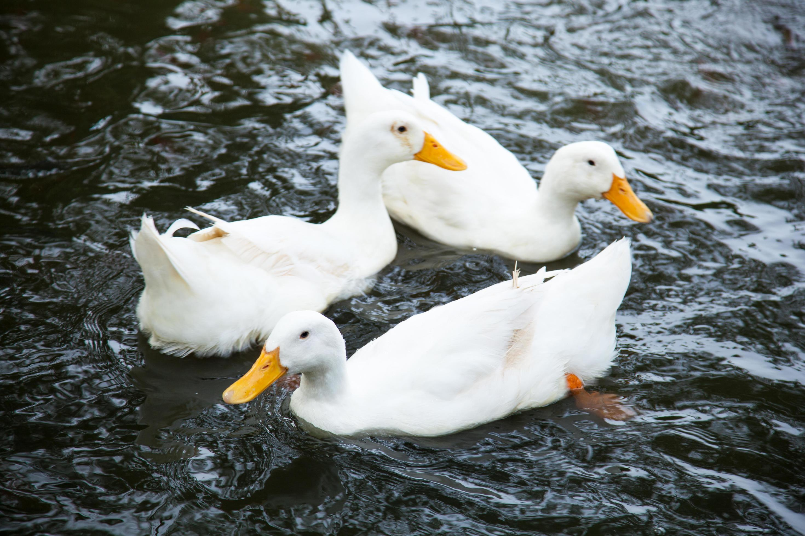
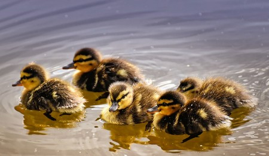
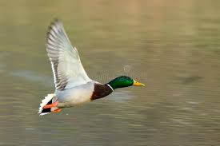
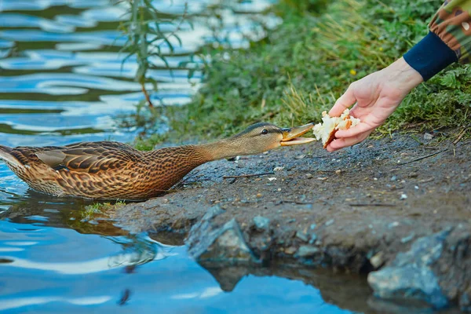
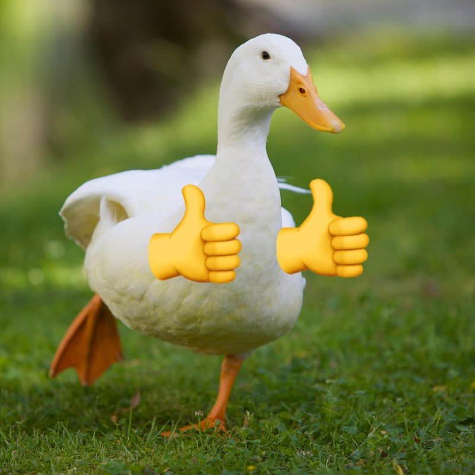
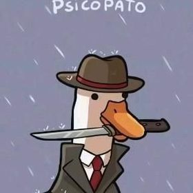

Informações Gerais
Nome Científico: Anas platyrhynchos (Pato-real)
Habitat: Áreas úmidas, como lagos, rios, pântanos e até parques urbanos.
Características: Possuem bicos chatos, pés palmados para nadar e penas impermeabilizadas por óleo.
Alimentação: São onívoros. Comem sementes, plantas aquáticas, pequenos peixes, insetos e moluscos.
Os patos conseguem dormir com um olho aberto para vigiar predadores!
Galeria de Fotos





